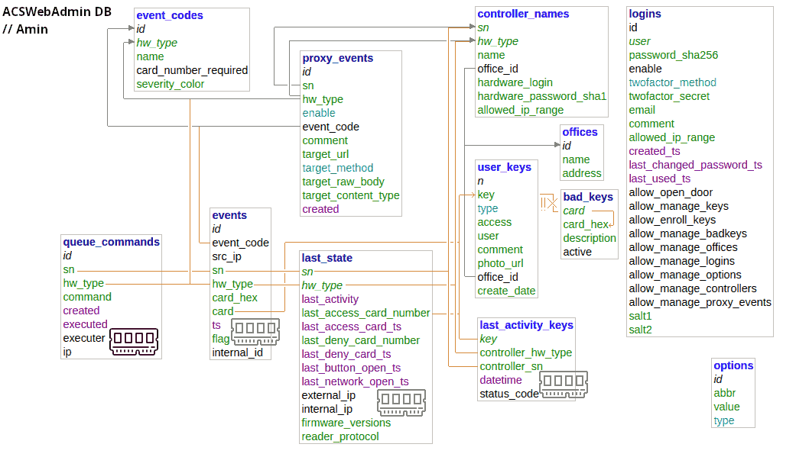
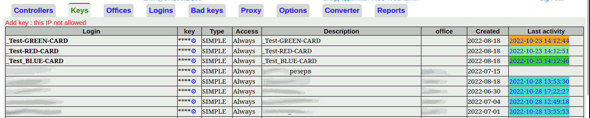

ACSWebAdmin - about
This system is used to manage ACS controllers (IronLogic Z5RWeb) connected to their control server using the WEB-JSON method. The system allows you to keep records of controllers and keys, their access, as well as binding to specific offices. In addition, it supports maintaining a list of compromised keys that are not allowed to be added to controllers. The possibility of proxying events is also implemented - when, when processing an event of a certain type, an appeal will be made to another system. There are several basic reports.The main development principle was the simplicity and openness of the code, as well as the use of the most simple and reliable solutions. All key features work in any browser. Browser Links - supported. CSS / JavaScript are optional. Without them, some actions will become less convenient, but no essential functions should break. The interface is localized, all official languages of international communication are supported out of the box. A significant part of them is made machine translation, in case of inaccuracies, please create an issue or send pull requests.
The system consists of the following parts:
- The main module for interacting with controllers. Represented by file index.php
Using an index file allows you not to specify the path on the controllers exactly to the file, indicating only the directory where the system is installed. It basically accepts POST requests from controllers and, after processing them, responds to them with a data set, for Z5RWeb - in JSON format. If a user browser is detected (User-Agent matches the RegExp template from the settings), it can immediately redirect to the admin panel. - Administration and reporting module. Represented by admin.php file and directory /reports
From here, the entire system setup is done, naming / IP binding of controllers, adding / assigning / revoking / deleting keys, setting up offices, user logins and their access rights, proxy events, and reporting. - Internal JSON-API module. Represented by file ha-json.php
A number of actions, such as key management, are placed in a separate file, which allows you to call control events from external systems. This checks authorization and lists of available IPs. - Additional modules are responsible for two-factor authorization (totp, BitcoinECDSA), password recovery (password-recovery.php) and interface localization (/localization).
ACSWebAdmin - Administration
There are three places where system settings can be changed from.1. Configuration file config.php
Here you can set the parameters for accessing the database, the interface language, the level and path of the debug log, as well as a secret and unique key for each installation. If you transfer the database to an external server, then it is here that you need to correct the address / port, database name, login and password from the database (parameters $db_????).
The $sess_secret_salt option contains the shared secret used to encrypt the session data. When installing the system, write there a random random value from some password generator. 16-128 characters is enough. Changing this parameter during operation will result in logout of all sessions and deactivation of all session links, for example, password recovery links.
$debug* - debug options. Debugging is disabled by default. If you need to see what the controller sends and what the script responds to, turn it on. By default, the log is in /tmp (assuming the server is on GNU/Linux or *BSD), and this directory is often placed in RAM. It is not recommended to keep debug enabled all the time.
The $localization parameter is responsible for the language of the interface. The default is Russian, which corresponds to ru or an empty string. If something else is specified, strings with localization will be taken from /localization/??.php. For example, if you set the value to en, the /localization/en.php file will be used, and the interface will be in English. The structure of the localization files is simple - it is a php file with a set of lines like $internal_variable_name = 'Translated value in the desired language'; You can create your own version of localization or translation of the interface, based on any of the existing templates like ??.php. If the Russian translation from default.php is taken as the basis, delete the if {...} block (3 lines) at the end of the file in your copy!
2. Database MariaDB / MySQL
It is unlikely that you will have to manually edit something in the database in the normal mode.
However, since the system is completely open, more details about the database and internal structures will also be described.
All other system settings and data about keys, controllers and related events are stored in this database. The structure of the database is described by the z5r.sql file, from which the database is created during the first installation.
The name of the database can be anything, the default is z5r. After changing the name or transferring the database, make changes in config.php.
By default, all tables are created with the InnoDB type, that is, all entered data is stored permanently. However, in some cases (as a rule, if reporting is not needed at all, but only key management and event proxying are needed) some tables can use the MEMORY storage type. In this case, the data will lie in RAM, and will be automatically deleted when the database server is restarted. The control over the number of records and memory consumption in the case of a MEMORY table is up to you.
Relationships between tables are represented as follows:

Of the important - the tables below, which have a RAM icon - CAN be transferred to the MEMORY storage type. In this scenario, restarting the server will clear the logs and last states, and they will be automatically updated and repopulated as events arrive from controllers.
With the default storage type (InnoDB), restarting the database server is absolutely safe, all data will remain in place. However, with a large flow of events, the corresponding tables may grow. The limit of their growth and the period of data storage are at your discretion. Also, for tables with an icon, it is permissible to do a complete cleanup of records, including through a TRUNCATE call. In this case, data on the last activity of the keys and logs on the passes for reports will be erased.
Some internal system data is directly in the database tables, and by default is not localized (written in English) and can only be changed by direct editing of the database. This includes, for example, the internal names of the event codes and the colors of the colorings for these events.
DB Keys.
For controllers, a natural primary key is used from the serial number and hardware model. Currently only one model is supported - Z5RWEB.
For users (those to whom keys are issued) an integer key is used inside the system, but all bindings between tables are made by the value of the em-marine code in the format xxxx,ddd,ddddd. That is, first there are two bytes of the series / community in hexadecimal form, then the card code in the form (3,5) - eight decimal digits. This format is used by the original software Z5RWEB, and it is used.
Tables:
- event_codes - reference table with event codes and their names. The value of id is strictly equal to the value of the event code returned by the equipment. The name and severity_color fields are responsible for the name of the event and the color with which the events will be painted in the interface,
- proxy_event - table of redirects (proxy) events. When the system receives an event from the controller, depending on the conditions (event code, controller serial), the system can send this event to another system (to a third-party server) with a separate HTTP request. Passing a number of parameters and several request methods are supported.
- controller_names - Table of registered controllers. For each controller, you can specify in which office it is located, how to call it, and from which addresses it is permissible to receive events for a given controller. If the controller changes the IP address, then with the value filled, allowed_ip_range should contain the correct value.
- logins - Logins of system operators, those who manage keys, controllers and system settings. The default username is admin with an empty password.
- offices - Offices.
- user_keys - Data on registered keys (cards) of employees. The table stores the login (full name), the office of the employee who was granted access, the date of creation, the map of default time interval schedules for this employee.
- bad_keys - table of codes of compromised keys. The system will not allow such keys to be added to controllers. Usually these are "universal" intercom keys, for example, FFFF, 255, 65535.
- queue_commands - In Web-JSON mode, the controller does not receive commands immediately, but only after receiving the task during the next server poll, usually once every 10 seconds. This table contains the scheduled commands that will be executed. Usually, these are key management commands. After execution, the command record is marked with the date of execution and is no longer sent to the controller.
- events - Event log. The largest and fastest growing table. According to its historical data, reports are built. If you need only key management, and historical passage data and passage reports are not needed, can also be converted to the MEMORY type.
- last_state - last state of each controller. One controller - one entry. It can easily be of the MEMORY type, in this case, when the database server is restarted, the system will update the data on the last successful / unsuccessful login only when new events of the required type are received.
- last_activity_keys - Data for when each key was last used. Used in reports. May be of type MEMORY if this data is not important.
- options - stores global system settings that can be changed from the web interface.
3. Web-interface
Available at the link /admin.php , when accessing the address where the system is installed from a client browser, the redirect will be automatic. To determine redirect conditions, the User-Agent header is checked against a regular expression from the settings. For the first login, enter the login admin , leave the password field blank. Assign a new password, without assigning a password, you will not be able to continue working. The web interface will look something like this:

The following links are visible on the top line:
- username@IP
This link leads to the user's profile. In the profile, the user can view the profile data and change some of them. Here the user can add two-factor authentication. Through the settings, you can specify which options will be available to the user for changes.
- Name of the installed instance of the system
This link leads to the main page with summary statistics.
- Exit/logout links
Ends the session. These sessions rely on the standard session mechanism. Sessions are tied to the current day, IP and UserAgent ($sess_control_string variable in admin.php).
- Contollers
Controllers added by autodetect or manually are displayed here. For each controller, the name, office, serial number, and a summary of the latest activity are displayed. Also here you can edit the data on the controller or delete it altogether, view the event logs and the history of executed commands, and also give a command to open the door (if you have all the required access rights). Inactive controllers are not removed from the database, they are displayed in pale text at the bottom of the list.
If you remove the controller from the database, but do not disable auto-registration, then it will be added to the database again if it sends data to the system. Removing a controller from the database does not send any commands to it, and does not affect the keys and accesses previously added to it, as well as its configuration. As well as adding a controller to the database does not cause any changes in its configuration. Accesses are changed only after commands are sent to the specified controller (for example, to add a key or change the access schedule).
Depending on access rights, some features may not be available if your system administrator has disabled them for your login or configured restrictions on available features by IP addresses. Also, if you do not have full rights to manage keys, **** asterisks
will be displayed instead of the card number Actions with the controller are available under the following icons (as part of the minimalistic design, Unicode characters are used, not graphics):
🖊 - data editing; 🗑 - remove the controller from the database; 💻 - executed commands, statistics; 📜 - detailed event log; 🚪 - open the door.
- Keys

Here is a list of employees and their passes. Z5RWEB usually uses em-marine cards and iButton protocol with 5-byte code. Each key is written in the format XXXX,ddd,ddddd , that is, two bytes in hexadecimal representation come first, then three bytes in decimal. This format is used by the Guard Commander software and in this form they are unloaded from the vendor's original software. To simplify the work, the same storage format was implemented.
Depending on access rights, some features may not be available if your system administrator has disabled them for your login or configured restrictions on available features by IP addresses. Also, if you do not have full rights to manage keys, **** asterisks
will be displayed instead of the card number For example, you can create a login that can add / revoke access to controllers, but will not see key codes.
Actions with the key are indicated under the following icons:
🖊 - data editing; 🗑 - remove the controller from the database; ⚙ - change the key access level on the controller (enroll keys).
When adding a new key, it will immediately be added to the selected controller with access at any time. Access can be revoked separately. Simply adding a key without operations with the controller is not implemented, because it is rather meaningless.
A previously added key can be rolled onto any other controller with any TZ value (access schedule). Only the recommended/calculated TZ value for the user is stored in the database; you can set it yourself when rolling the key.
Editing the key allows you to change the username, description and office, as well as change the access schedule. Unfortunately, the current Z5RWeb API does not allow getting data about the schedules configured on the controller, so only editing the TZ parameter, which is a bit mask of available access schedules, is available. The most important numbers are 0 (no access) and 255 (anytime access). Everything else requires a separate configuration of schedules on the controller and calculation of TZ values according to the instructions of the controller manufacturer. The key editing procedure only changes the default parameters, it does not send anything to the controllers.
Deleting a key by default only suggests deleting it from the selected controller. There is a separate link inside the delete form to completely remove the key from the database and all controllers. Controllers that are not connected to the server will not be able to process such commands.
Direct editing of key codes is not allowed. If a key is lost, first completely remove it from the controllers and the base through the delete dialog, and add a new key in its place.
Currently only SIMPLE keys are supported. Support for master keys and blocking keys is not yet implemented.
- Offices
They are used to group keys and controllers by branches. Adding a key or controller to a given office does not affect any access per se, nor does it change anything in the controllers. Office affiliation is also used in reports. The situation when one employee has access to different offices with one key is quite standard.
- Logins
Logins of administrators / security employees are set here. This section is only available to those who have access to manage logins. Otherwise, only the profile is displayed here logged in user. Restrictions on IP addresses from where login is allowed and several methods of two-factor authentication are available as security measures.
The empty value of the IP filter corresponds to the absence of restrictions on IP. The format is addresses/subnets separated by commas or spaces.
- Bad keys
These are blacklist keys that cannot be added to controllers. An important point is that if such a key has already been added to the controller earlier, then it will not be deleted from there. This list only prevents such keys from being added via the web interface and API.
- Proxy
Event proxying is configured here. When something interesting happens on some controller, the system itself can send an http request to an external system, by passing parameters from the request, both as parameters and in the request body. GET, POST, PUT
methods are supported This is necessary for integration with external systems - for example, video surveillance, SIEM, directory services or external reporting systems.
- Options
Here are the global settings. The lists are most important for limiting the available functions by IP. Parameter names are localized.
- Converter
Helper form for converting keys and TZ parameters.
- Reports
Here you can generate simple reports on passes, keys and events. Each report is represented by a separate php file from the /reports directory
To add your report, do the following:
- come up with a file name (in English, system name) and a name for the report
- Add system name to $reports_array array in /reports/index.php
- Create a variable in the localization files (localization/**.php) loc_reports_{system name} to display the report name in all languages
- Create a file /reports/{system name}.php based on any of the existing
Pull requests are welcome.